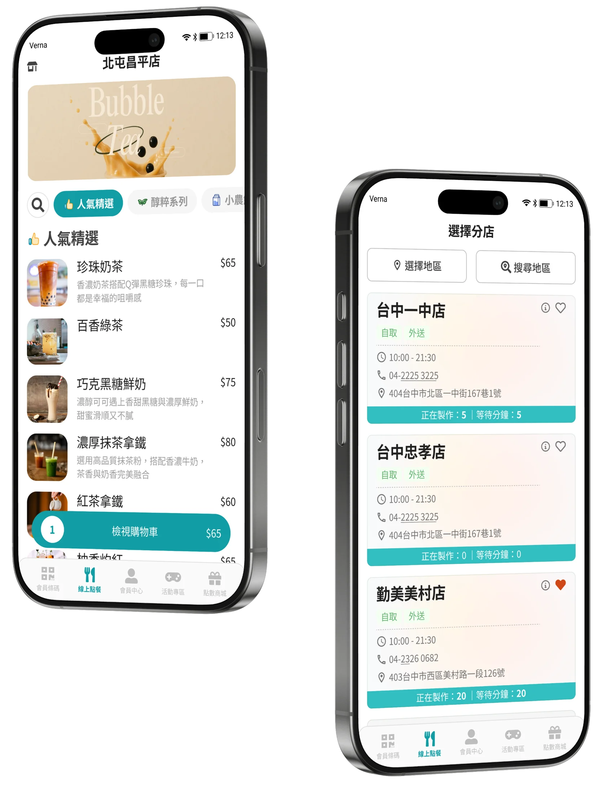
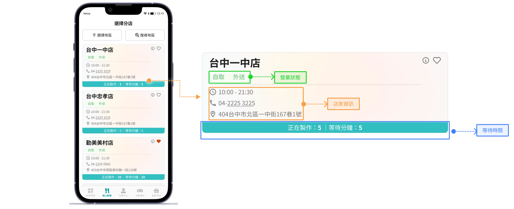
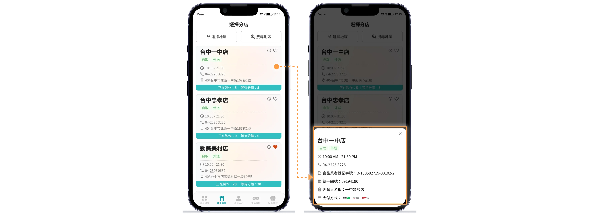
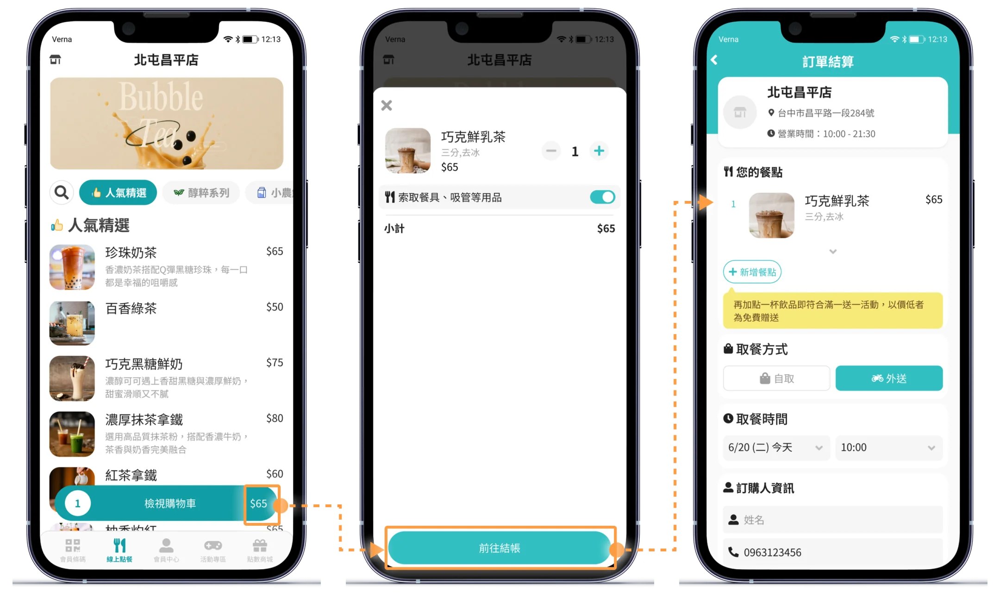
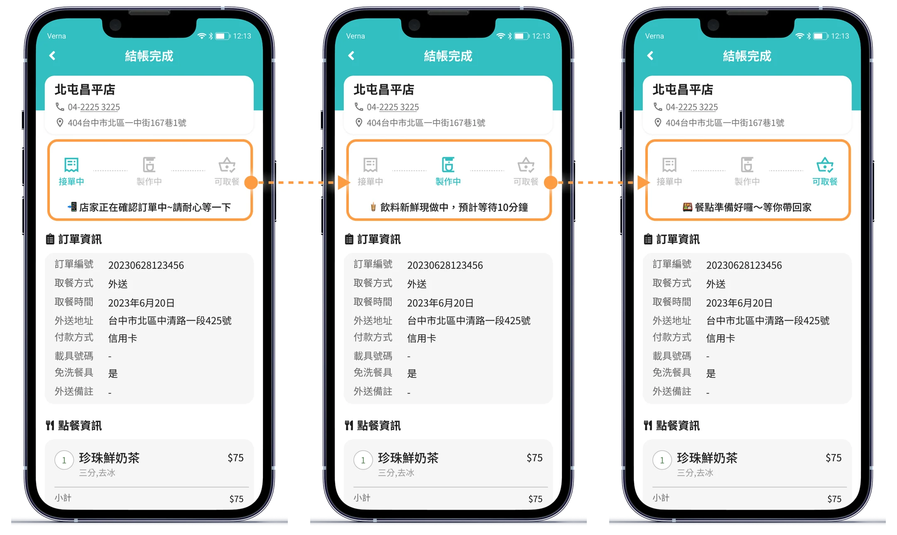

少一點等待，多一點滿足。
突顯使用者體驗的流暢與即時性
本案例改編自前公司專案，品牌與資料皆為虛構。

UI Designer
我的角色
負責核心流程梳理、介面設計、元件規範與開發交付，並與 PM、工程師協作完成產品落地。
Goal
專案目標
打造從「找店 → 點餐 → 付款 → 取餐」都能快速理解下一步的線上點餐體驗，同時建立可延展的 UI 架構，支援後續功能擴充。
Challenge
核心挑戰
-
店家選擇成本高
資訊量增加後，使用者難以快速判斷適合的店家。
-
等待資訊不透明
下單前後缺少等待時間與訂單進度資訊。
-
操作流程容易中斷
付款、導覽與重要操作資訊分散，增加理解成本。
接下來針對以上問題，重新整理資訊層級、操作路徑與訂單狀態呈現。
01降低店家選擇成本
將關鍵資訊前置於店家卡片，讓使用者不需逐一進入店家頁即可完成初步判斷。

01-1不換頁瀏覽店家詳細資訊
點擊卡片後以 Bottom Sheet 呈現門市重點。營業時間、電話、地址、發票資訊與支付方式，不跳頁即可比較與確認。

02固定主要操作位置
固定購物車與結帳入口，持續呈現金額與下一步操作，降低操作中斷。

03降低等待過程中的不確定感
以階段式狀態持續回饋訂單進度，讓使用者清楚知道「現在到哪裡、接下來要做什麼」。

本案例改編自我在前公司參與的專案，品牌名稱、客戶資料與數據已替換為虛構內容。介面設計沿用原專案的部分架構，僅用於說明我的設計流程。